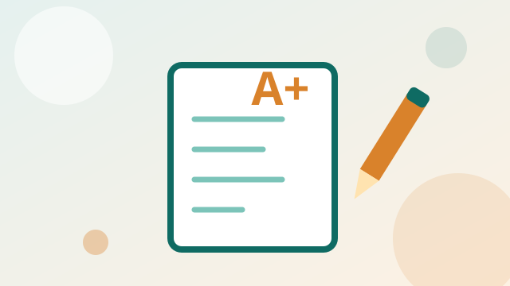
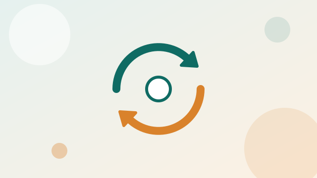

Table of Contents
Every section in order. Search to find sections and evidence.
 01 Purpose Statement ✓ CompleteWhy you are becoming a teacher and what this portfolio demonstrates.
01 Purpose Statement ✓ CompleteWhy you are becoming a teacher and what this portfolio demonstrates. 02 Initial Philosophy ✓ CompleteYour beliefs about teaching and learning at the start of the programme.
02 Initial Philosophy ✓ CompleteYour beliefs about teaching and learning at the start of the programme. 03 Sample Unit of Instruction ✓ CompleteA complete unit: outcomes, content, sequence of lessons and assessment.
03 Sample Unit of Instruction ✓ CompleteA complete unit: outcomes, content, sequence of lessons and assessment. 04 Lesson Plans ✓ CompleteIndividual lesson plans from the unit.
04 Lesson Plans ✓ CompleteIndividual lesson plans from the unit. 05 Task Analysis ✓ CompleteBreaking a skill into steps and prerequisite knowledge.
05 Task Analysis ✓ CompleteBreaking a skill into steps and prerequisite knowledge. 06 Instructional Scaffolding ✓ CompleteSupporting learners from teacher demonstration to independent work.
06 Instructional Scaffolding ✓ CompleteSupporting learners from teacher demonstration to independent work. 07 Peer Discussion ✓ CompleteContributions to discussions and responses to classmates.
07 Peer Discussion ✓ CompleteContributions to discussions and responses to classmates. 08 Technology ✓ CompleteHow technology supports teaching and learning in your lessons.
08 Technology ✓ CompleteHow technology supports teaching and learning in your lessons. 09 Performance Assessment & Rubrics ✓ CompletePerformance tasks with the rubrics used to mark them.
09 Performance Assessment & Rubrics ✓ CompletePerformance tasks with the rubrics used to mark them.
10 Classroom Assessment ✓ CompleteFormative and summative assessment strategies. 11 Curriculum Integration ✓ CompleteConnecting your subject to other subjects and real-life contexts.
11 Curriculum Integration ✓ CompleteConnecting your subject to other subjects and real-life contexts.
12 Adaptation to Change ✓ CompleteHow you adjust teaching to changing needs and circumstances. 13 Instructional Objectives ✓ CompleteWriting clear, measurable objectives.
13 Instructional Objectives ✓ CompleteWriting clear, measurable objectives. 14 Reflective Summary ✓ CompleteA final reflection on growth across the programme.
14 Reflective Summary ✓ CompleteA final reflection on growth across the programme.